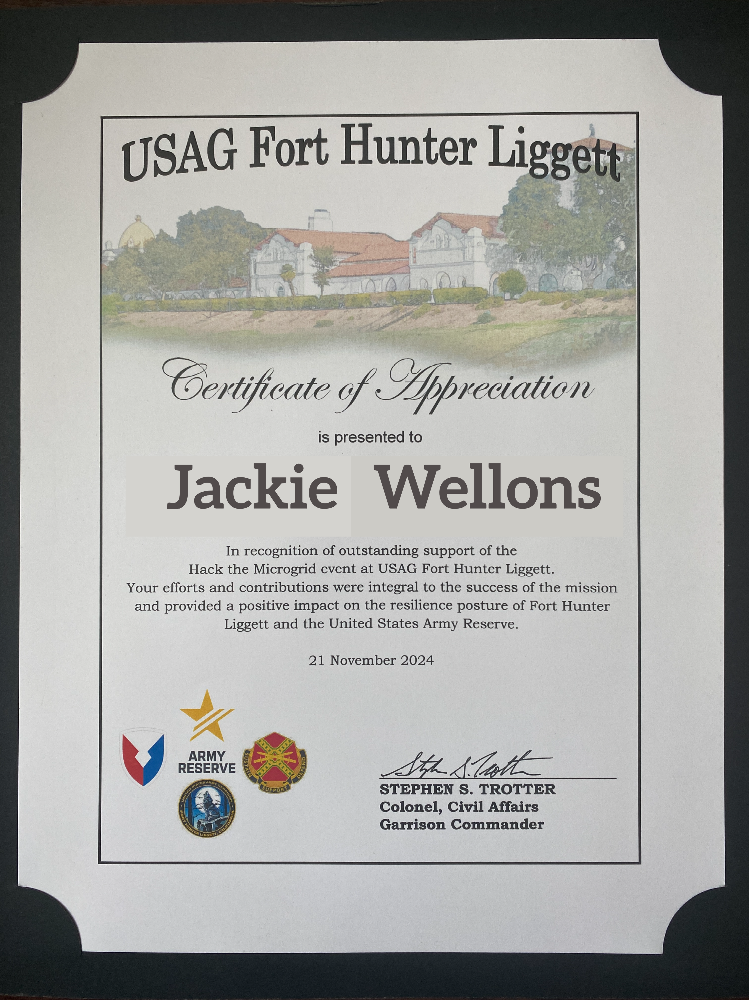
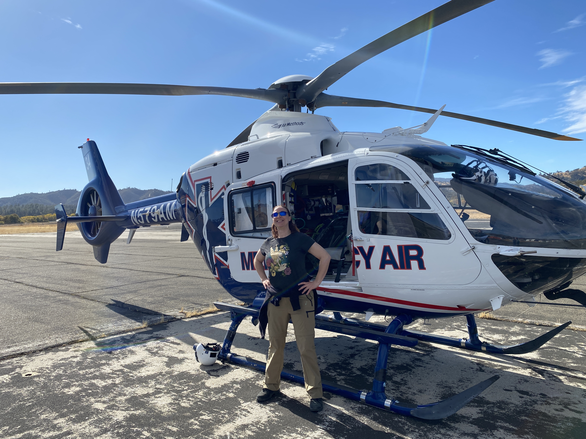
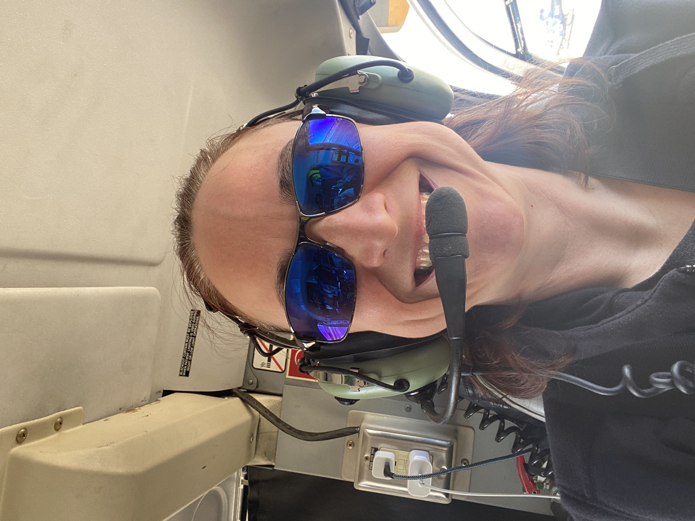
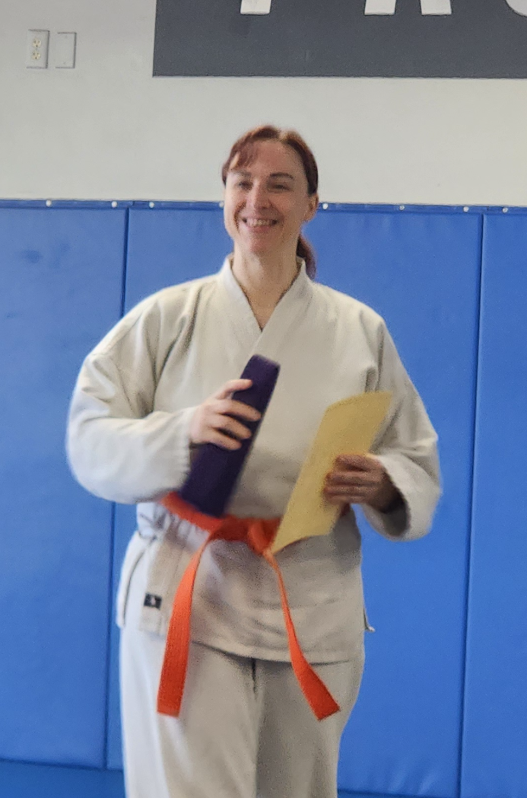
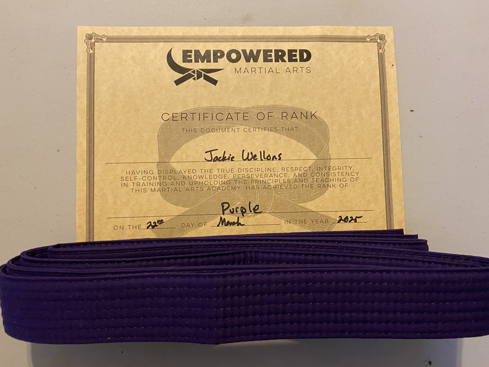

Recent Adventures and Accomplishments
USAG Fort Hunter Ligget
At the end of 2024, I attended a hardware bash focused on testing operational technology. About a month before the event, I participated in training to deepen my understanding of the hardware we would be working with. The event also gave me the incredible opportunity to ride in a helicopter—an experience that had been on my bucket list for years. After a successful event, I was honored to receive a certificate of appreciation. With only a few awarded, it made the recognition even more meaningful and memorable.



Martial Arts
I started practicing martial arts in high school but had to stop when I went away to college. During that time, I earned an orange belt in a mix of Judo and Hapkido. Returning to martial arts had always been a goal of mine, and I was finally able to make it happen. Now, I’m training in Kenpo Jutsu. I recently earned my purple belt, surpassing where I left off, and I’m continuing to work toward my next rank. It’s refreshing to step away from technology and completely unplug for a few hours each week.

